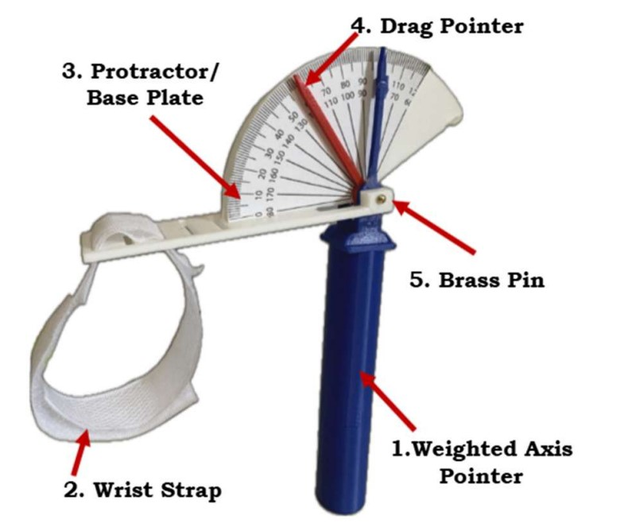
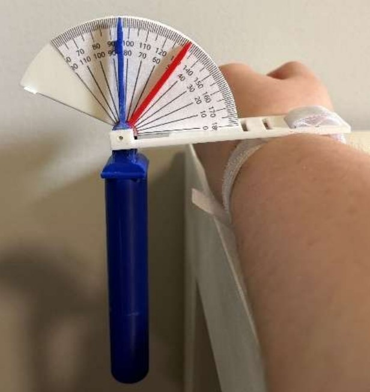
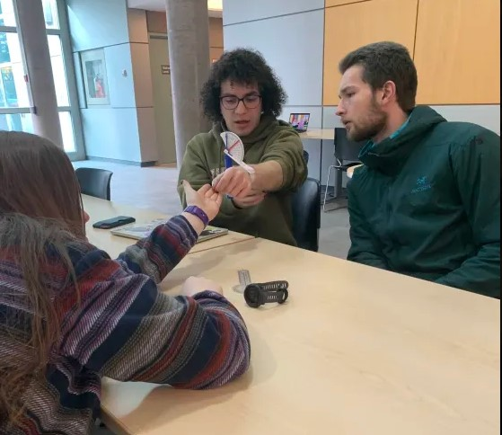
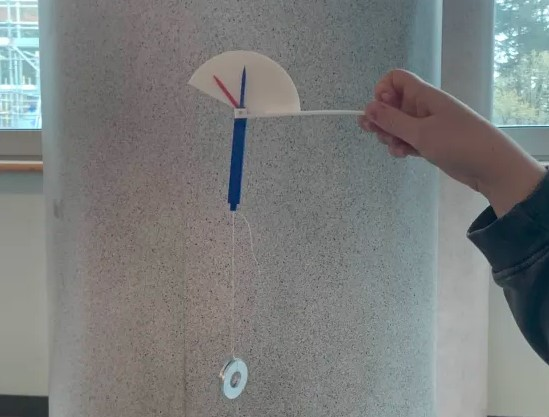

Wrist supination and pronation measurements guide rehabilitation treatment and track patient progress, but traditional goniometers suffer from poor accuracy due to unclear anatomical landmarks, internal axes of rotation, and inter-clinician variability. In partnership with Dr. Paul Winston (physiatrist, Victoria General Hospital), my team and I completed a redesign of a fully mechanical goniometer to address these gaps. This design project focused on human factors engineering and design for the clinical environment. After presentations to a panel of industry professionals, our team recieved 2nd place for our design.
The weighted axis goniometer uses gravity to establish a true vertical axis, eliminating visual alignment estimation. Development involved a workflow analysis, SOLIDWORKS modeling, 3D-printed iterative prototype testing, finite element analysis, and full risk analysis (FMEA). Extensive usability testing was completed after development. Additionally, multiple meetings with the VGH team allowed for collaboration and feedback throughout the development process. After completion, training was performed with the VGH team for successful adoption of the device.

Technical features

Goniometer in use

Training session

Initial prototype
When compared to the typical standard manual goniometer, our device reduced average training time for wrist supination and pronation measurements by 86.2%. Additionally, it reduced measurement time by 35%, set up time by 19.8%, and inter-clinician measurement error by 28%.